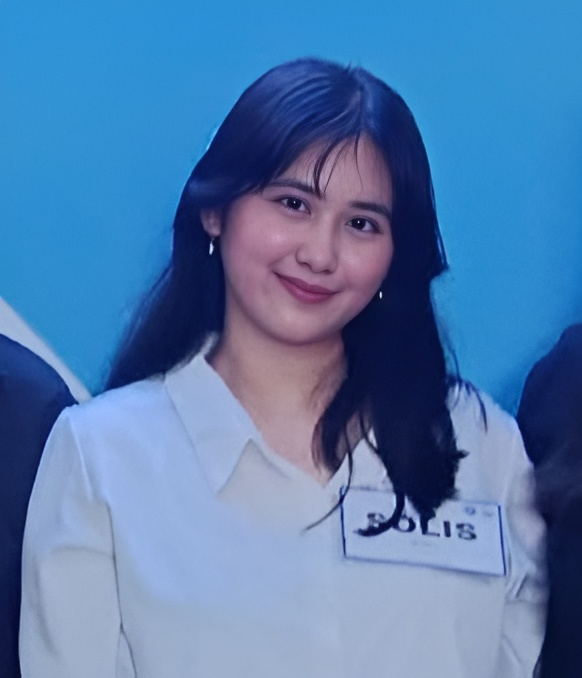
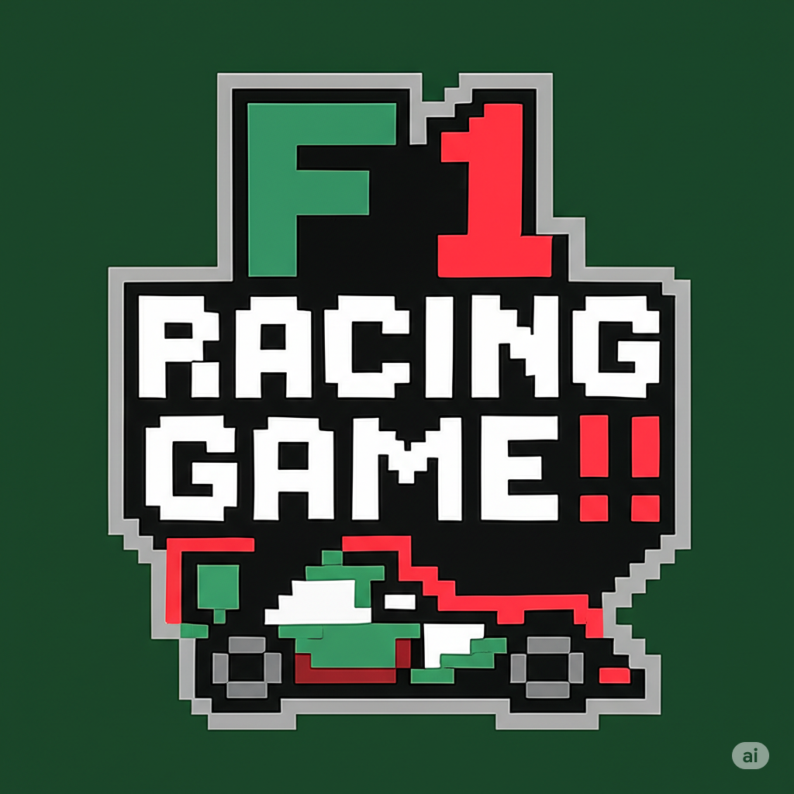
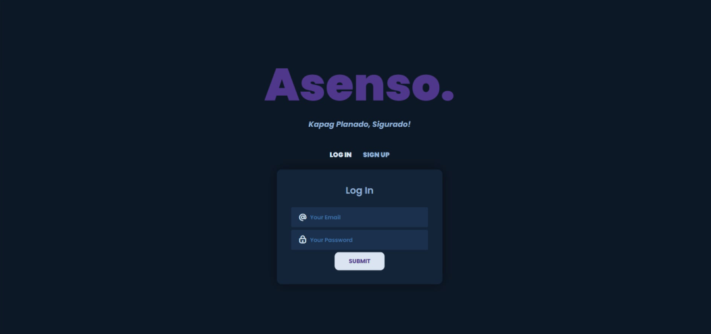
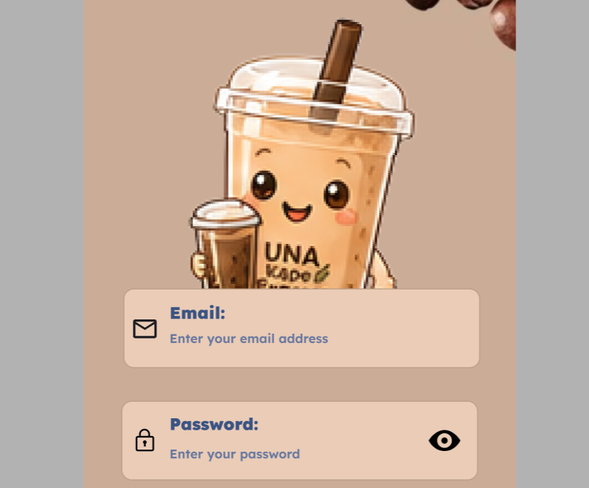

Web Development
Developing and designing web pages and interfaces.
✩ LYN PERSONAL PORTFOLIO ☾
Information Technology Student
Welcome to my little universe. A collection of my academic journey, creative ideas, achievements, and experiences in the world of technology.
01 / MY STORY
Every star has a story, and this is mine.

HELLO, WORLD!
I am Crislyn A. Solis, an Information Technology student who enjoys exploring technology, developing new skills, and turning ideas into meaningful projects.
My academic journey has allowed me to explore different areas of IT, including web development, programming, database management, networking, and interface design.
I believe that learning is a continuous process. Every challenge, experience, and project gives me another opportunity to improve, grow, and discover what I can achieve.
02 / MY CONSTELLATION
Tools and technologies I have explored and practiced.
Developing and designing web pages and interfaces.
Organizing, storing, and managing information.
Exploring network configurations and connectivity.
Using digital tools for development and creativity.
03 / BEYOND TECHNOLOGY
Personal qualities that guide the way I learn and work.
Being willing to consider new ideas, perspectives, and experiences.
Showing responsibility, dedication, and professionalism in tasks.
Organizing priorities and using time effectively.
Adjusting to changes, challenges, and different situations.
Analyzing situations and finding practical solutions.
04 / MY CREATIONS
A collection of projects and academic experiences.

01JAVA PROGRAMMING · 2025
A simple mini racing game developed using Java as an academic group project in 2025. The game allows players to add cars and watch them compete in a race, demonstrating basic Java programming concepts and interactive game development.

02WEB DEVELOPMENT · 2025
A web-based scheduling and productivity platform inspired by tools like Google Calendar. It helps users organize their schedules, manage activities, set reminders, and keep track of important tasks and events in one convenient place.

03UI/UX DESIGN · 2026
A mobile ordering application prototype designed to present an organized ordering experience, including product browsing, cart management, and checkout.
 04
04
SYSTEM DEVELOPMENT · 2026
A web-based Point-of-Sales and Inventory Management System developed to support order processing, sales monitoring, inventory tracking, and low-stock alerts.
05 / MY ACADEMIC PATH
Every milestone contributes to the person I am becoming.
Elementary Education
Junior High School
Senior High School Strand
Bachelor of Science in Information Technology
Currently pursuing college education06 / MILESTONES AND RECOGNITION
Important milestones and recognitions throughout my academic journey.
GRADE 8
Recognition for conduct and behavior.
GRADE 11 AND 12
Academic recognition for scholastic achievement.
JUNE 20, 2026
Successfully passed the NC II assessment.
MY LEARNING JOURNEY
Technical training and learning experiences that contribute to my growth in technology.
Technical training and assessment in computer systems servicing.
Training and AssessmentAn introductory learning experience in cybersecurity concepts and online safety.
Cisco Networking AcademyLearning and practice in HTML, CSS, and responsive web design principles.
freeCodeCamp LearningANOTHER WORLD TO EXPLORE
07 / REACH OUT
Thank you for taking the time to explore my portfolio. I am always open to learning, connecting, and discovering new opportunities.
Send Me a Message ↗